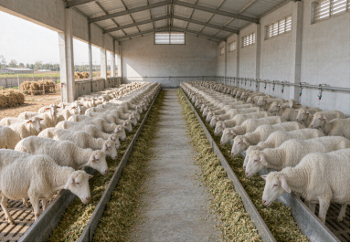

01 · 圈舍饲养
舍饲圈养
指羊只主要在专门修建的圈舍内饲养，不进行草地放牧。羊只主要采食人工提供的粗饲料和精饲料，饲料通常由养殖人员按照饲养需要进行配比和投喂。羊只日常在圈舍内采食、饮水、行走和休息，活动范围主要受到圈舍空间的限制。圈舍通常配有通风、饮水等设施，养殖环境通过人工管理进行调节，土地主要用于圈舍及相关养殖设施建设。
INFORMATION 01 · PRODUCTION SYSTEM
羊肉的养殖方式指羊只在生长过程中所采用的饲养与管理模式，主要涉及饲养场地、饲喂方式、活动条件及相关生产设施等方面。不同养殖方式在土地利用、养殖环境与羊只活动条件等方面存在差异。
本页面浏览时长将被记录。您可以根据自己的需要阅读，并随时返回搜索首页或继续问卷，无需等待。
近年来，随着太阳能光伏发电技术的发展，在依法合规建设的光伏发电场区内开展羊只放牧的生产模式逐渐受到关注。该模式利用光伏板下方或板间具备放牧条件的区域进行羊只养殖，实现光伏发电与畜牧养殖在同一场区内的结合。本研究根据羊只是否进行放牧，以及放牧活动是否在光伏发电场区内开展，将羊肉的养殖方式分为舍饲圈养、传统草地放牧和光伏场区放牧三种。

指羊只主要在专门修建的圈舍内饲养，不进行草地放牧。羊只主要采食人工提供的粗饲料和精饲料，饲料通常由养殖人员按照饲养需要进行配比和投喂。羊只日常在圈舍内采食、饮水、行走和休息，活动范围主要受到圈舍空间的限制。圈舍通常配有通风、饮水等设施，养殖环境通过人工管理进行调节，土地主要用于圈舍及相关养殖设施建设。

指羊只在普通草地或牧场中进行放牧，放牧区域不设置与羊只放牧相结合的太阳能光伏发电设施。羊只主要通过采食牧草获取营养，并在适宜的牧场区域进行采食、行走和休息等日常活动，必要时可由养殖人员补充饲料。羊只的活动空间与放牧区域有关，其生长环境主要受到当地气候、草地植被及牧场管理方式等因素的影响。牧场内的光照、气温和自然遮荫条件会随季节、天气及时间发生变化。

指在依法合规建设的光伏发电场区内，利用光伏板下方或板间具备放牧条件的区域开展羊只放牧。光伏设施按照相应的场地要求设置，羊只可在适宜区域采食、行走和休息，光伏设施同时用于太阳能发电。与常规草地放牧相比，光伏板形成的遮阴区域会改变牧场局部的太阳辐射、光照强度和热环境。这些环境变化可能影响羊只受到的辐射热负荷以及采食和休息行为。
三种方式的主要差异体现在羊只饲养环境、活动方式以及是否与光伏设施共用场区。
| 比较维度 | 舍饲圈养 | 传统草地放牧 | 光伏场区放牧 |
|---|---|---|---|
| 主要场地 | 专门修建的圈舍 | 普通草地或牧场 | 依法合规建设的光伏发电场区 |
| 主要饲喂方式 | 人工提供粗饲料和精饲料 | 主要采食牧草，必要时补充饲料 | 在具备放牧条件的区域采食牧草 |
| 羊只活动条件 | 活动范围主要受圈舍空间限制 | 在适宜牧场区域活动 | 在光伏板下方或板间适宜区域活动 |
| 光伏发电设施 | 不涉及 | 不设置与放牧相结合的光伏设施 | 场区内设有光伏发电设施 |
注：以上内容用于说明三种养殖方式的基本特征。具体养殖管理情况可能因场地条件和经营主体而有所不同。
图片：本研究提供的三种养殖方式场景图片。